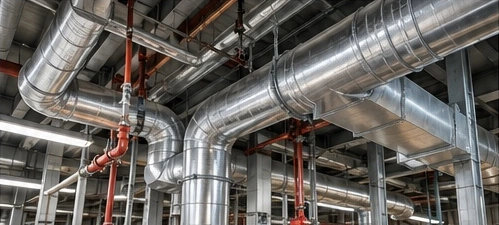

Engineering within
heritage.
Integrating modern building systems within one of Canada’s most significant heritage buildings.
The Centre Block rehabilitation brings contemporary building services into the historic fabric of Parliament Hill. My work with Modern Niagara focused on coordinating the mechanical systems that make that integration possible.
- Project
- Parliament Hill Centre Block Rehabilitation
- Employer
- Modern Niagara
- Role
- VDC Designer
- Period
- 2025–2026

The complexity of heritage.
In an existing building, a clear route on one drawing can be occupied by structure or another trade on the next. Bringing hydronic piping and sheet metal into a shared model helped the team examine those conflicts while respecting the building’s heritage fabric.
My contribution.
- Modelled and coordinated hydronic piping and sheet metal systems in Revit.
- Reviewed clashes in Navisworks with the mechanical and architectural teams.
- Used Bluebeam coordination sessions to track issues and communicate revisions.
- Prepared coordinated drawings to support installation and field review.

From model to construction.
Coordinated drawings gave the site team a common reference for routing and installation. When a clash prompted a change, the model and drawing could be reviewed together before the work reached the field.
A project defined by precision, collaboration,
and respect for heritage.